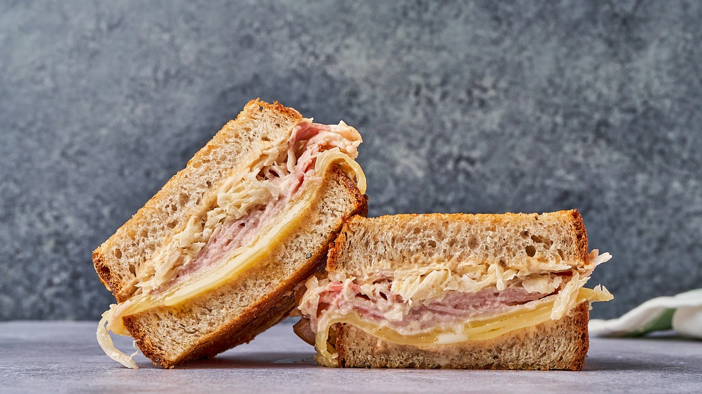

-

Turkey Reuben Burgers
Ingredients
- Ground Turkey - 1½ Pound / Kilo
- Garlic - 1, chopped
- Virgin Oil - 2 tablespoon
- Lemon juice - 1 teaspoon
- Mustard - 1 teaspoon
- Ground Garlic and Salt - 1½ teaspoon
- Breadcrumbs - ½ cup
- Olive Oil - 2 tablespoons
- Mozzarella - 4 slices
- Onion - cut into rings
- Black Pepper - a pinch
- Butter - 2 tablespoons
- Whole Bread - 8 slices
- Sauerkraut - 1 can, drained
Method of Preparation
Mix virgin oil, lemon juice, mustard, turkey, garlic, and breadcrumbs. Divide into 4 parts and shape each part into a patty
Place on a plate and sprinkle garlic powder and salt. In a ftying pan, add olive oil and fry for 7-10 minutes. Remove and add mozzarella cheese on each patty.
Fry the onion for 10 minutes with black pepper. take out and add butter and toast the bread on each side for 2 minutes
Place one slice of the bread and top with mozzarella cheese, sauerkraut, onion, dressing (oil, lemon juice, mustard), the turkey patty and top with the other bread.